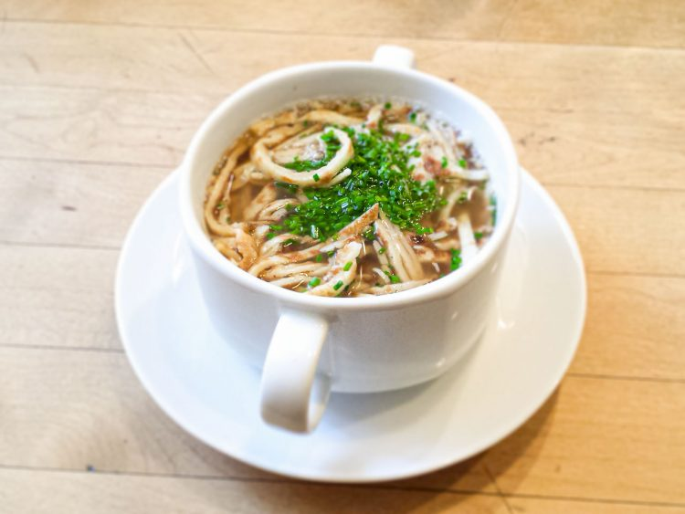

Frittaten

Beschreibung
Frittaten
Zutaten
- 1/4 L Milch
- 100 g glattes Mehl
- 2 Eier
- etwas Salz
- Schuss Mineralwasser
Anleitung
- Für die Frittaten, Milch und Mineralwasser mit Mehl und Salz gut verquirlen und etwas stehen lassen. Vor dem Backen die Eier unter den Palatschinkenteig rühren.
- Wenig Öl in einer größeren Pfanne erhitzen. Ein Schöpfer Teig in die Pfanne gießen, schwenken, so dass der ganze Pfannenboden bedeckt ist und die Palatschinken auf beiden Seiten goldgelb backen.